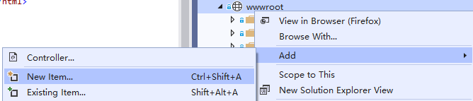
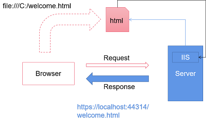

VS中新建html文件
虽然用记事本就可以写出.html文件，但我们是专业人士。工欲善其事必先利其器， 所以接下来我们就需要使用宇宙最强IDE：Visual Studio了。
安装完成之后需要创建一个ASP.NET core的Web项目。
然后，在其中的wwwroot下添加html文件即可。（注意：不要更改wwwroot之外的其他任何内容）
暂时我们也不需要理解其中的solution/project等的含义（有好奇心的同学，见：Visual Studio：项目和解决方案）
注意：文件的命名
- 新建html文件上右键 - View in Browers
- 修改默认浏览器
理解开发环境
通过Visual Studio中的ASP.NET项目浏览一个html页面，和在浏览器中打开一个html页面不一样。
事实上，VS在运行时启动了一个IIS express，在本地模拟了真实的服务器环境（environment）， 浏览器是连接着这个IIS在运行的！——Visual Studio被称之为IDE，就是因为它自带了这些组件，能够 完成这些工作（如果使用VS code需要自己搭建这些环境）。
IIS
全称：Internet Information Service，是服务器上安装的一个“软件”，这个软件可以响应http请求。
类似的应用于Linux的，还有：Apache
IIS Express：是Visual Studio内置的IIS演示版，是精简的/用于开发的/迷你的 IIS。
因为VS中所有的ASP.NET项目都运行在localhost（本地主机）上，所以VS用随机生成的端口号（port）来区别各个项目。
PS：服务器/端口，就类似于： 房子/门窗
服务器（server）
对外提供“服务”的“机器”（电脑/计算机）。
什么是服务？简单的说，就是“功能”，它能干的活，比如：输出网页、发送Email等等。
服务器和我们用的电脑有什么区别呢？本质上没有区别。服务器为什么被称为服务器？就像警察被称之为警察一样：
- 警察也是人，因为从事警察工作，我们就称其为警察
- 服务器也是计算机，因为它用于提供服务，所以我们就称其为服务器